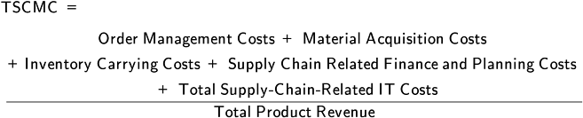

Here we address the first few steps in the purchasing process, which occurs after the more strategic decisions related to sourcing have been made. We get down to the details of supplier selection criteria, including supplier value-added services, negotiation with suppliers, and contract deployment and management.
Exhibit 3-14 shows how supplier selection is the first step in the purchasing function. This step includes evaluations such as developing selection criteria or specifying necessary value-added services. Negotiation and its end result, contracting, are also discussed in this general content area.
Once an organization knows what it plans to do itself (its core competencies) and what it plans to use suppliers for and the level of relationship it desires for each supply need, it engages in the supplier selection process. Supplier searches can use auctions, reverse auctions, portals, exchanges, approved vendor lists, referrals or prior relationships, location-specific consulting organizations, competitive bidding using requests for quotation (RFQs) or invitations to tender (ITTs), or direct negotiation.
Optimizing the supply chain may require taking a nontraditional approach to selecting suppliers. Traditional thinking emphasizes making the greatest possible profit for the enterprise without regard to the impact on other parties. Suppliers look for the price that will yield the highest margin for them without regard to customer needs; buyers look for the lowest price without regard to the impact on the suppliers. Contracts may cover only short-term transactional arrangements.
Supply chain thinking requires a strategic view of sourcing that focuses on the long-term success of all partners along the supply chain. Pricing, discounts, delivery timing, and related matters can be established cooperatively, taking into account the needs of supplier and buyer. The emphasis is on establishing ongoing relationships rather than simply making a series of transactions, pitting suppliers against one another to drive down prices. The pressures in contemporary markets, from both customers and suppliers, necessitate forming deeper relationships for many sourcing solutions. Deeper relationships contribute to the profitability of an integrated supply chain as well as that of each partner.
An organization will use a range of criteria in conducting a supplier search and may place more or less weight on particular criteria to emphasize strategic priorities for the given category of supplier. Possible criteria include strategic supply plans, technical specifications, desired quality, and supplier financial strength. Here we'll look at four other factors that can be used as selection criteria: costs, alignment with supply chain needs, adherence to corporate social responsibility policies, and ability to provide required value-added services.
To remain competitive, organizations must develop supplier relationships that allow them to lower total costs and, consequently, increase profits. Businesses must be able to source products and services and operate at the lowest costs possible, and they must partner with efficient and effective suppliers who can deliver goods and services on time and to specifications, especially when using lean or Just-in-Time production methods.
Two cost categories that can be used as selection criteria are total cost of ownership and cost of goods sold.
Total cost of ownership (TCO) is discussed in detail elsewhere. A problem with TCO in a situation involving outsourcing is that too often companies look at the obvious—purchase price, transportation costs, duty costs associated with doing business on a letter of credit, etc.—but ignore the additional lead time. Longer lead times typically involve more inventory in the supply chain, and the carrying cost of that additional inventory needs to be included in the TCO analysis.
Let's look at an example. A company's initial analysis of copper tubing costs for Brazilian, Korean, Chinese, and U.S. suppliers showed that the supplier from China had the lowest costs, even after all landed costs were considered. However, when the inventory carrying costs due to the longer lead times were included, the U.S. supplier, located only three hours away, actually had the lowest costs. This example is illustrated in Exhibit 3-15.
Lowering the total cost of goods sold (COGS) is of strategic importance to a company. Such costs exert a strong amount of leverage over profits. A dollar decrease in COGS will be reflected as a dollar increase in gross margin. A dollar increase of sales has to be offset by COGS, and only the net will be added to the gross margin. Therefore, reducing the costs of materials, labor, or overhead through efficient supply management is more effective. This point is illustrated in the scenario shown in Exhibit 3-16.

Oftentimes, the focus on cost reduction leads to global sourcing and procurement. But in order for an organization to have a successful offshore partnership, the potential suppliers must have business processes and efficiencies that complement the strategic goals of the organization's supply chain, and they must be able to deliver on their capabilities to provide value for the customer. Successful offshore partnering does not happen by chance. Before entering into a strategic global alliance, both organizations need to lay the appropriate groundwork.
Site visits should be considered a requirement before establishing onshore or offshore partnerships. All key stakeholders who will be involved in the relationship should participate, and critical processes and technology should be reviewed for the ease of interfacing (i.e., cost and time required for interfaces).
Another supply chain factor to consider is the supplier's technical communications ability so that the supplier can receive real-time information on customer orders and thus reduce supply chain problems such as the bullwhip effect.
Since the organization that owns a product brand and image will be held responsible for the activities of its extended supply chain, most organizations consider how potential partners could affect their reputation. Prior to searching for suppliers, persons responsible for supplier selection should consult an organization's corporate social responsibility (CSR) policy for guidance.
The CSR policy, also called the corporate citizenship policy, is a type of organizational self-regulation that involves adding priorities to an organization's business model.
The CSR policy, also called the corporate citizenship policy, is a type of organizational self-regulation that involves adding priorities to an organization's business model. The model still focuses on profits but also defines success as meeting the needs of the community and the environment.
The CSR policy requires that employees and suppliers hold themselves accountable for compliance, but the organization may need to audit prospective suppliers and monitor existing suppliers for compliance.
Topics of a CSR policy related to supplier selection could include
Customer health and safety (e.g., supplier's product and service safety relating to legal liability, such as being nontoxic or defect-free)
Employee health and safety (e.g., risk exposure of employees of supplier)
Environmental sustainability (e.g., supplier's energy use, carbon footprint, use of recycled or reused materials)
Maintainability (e.g., total cost of ownership of supplier's products)
Employment policy (e.g., supplier's wages relative to regional averages, abstaining from exploitation such as child labor)
Community reinvestment and use of local goods and services (e.g., requiring local supplier search, including transportation cost savings in selection criteria, or ranking local suppliers higher in evaluations).
The CSR policy is often based in part upon compliance with international or home-country laws and regulations. Legal review will determine the extent to which such laws or regulations have jurisdiction over supplier methods or products.
Product design will also play a role in supplier selection and CSR. Products designed to minimize the need for hazardous materials are an example.
A general category of supplier value-added services that many organizations have come to expect can be summarized as world-class service. As organizations look to right-size their supply base, any new suppliers that are added will need to be as good as or better than existing suppliers in the given category. This could entail excellent on-time delivery performance, ability to meet service level agreements, and ability to collaborate on designs or ongoing cost improvements. Examples of supplier value-added services include
Maintaining safety stocks of components so the organization doesn't have to
Quick responses to changing product or volume requirements (e.g., reconfigurable manufacturing equipment)
Adopting compatible transfer packaging to eliminate customer process steps (e.g., a product shipped in reels to enable direct loading to a machine) or to be reusable
Break-bulking or consolidation of goods from various sources (upstream warehouses)
Consulting services, such as input to category market research or evaluating various materials or production methods for potential use
Technology capabilities, ranging from computer-aided design (CAD), to track and trace (e.g., RFID and GPS), to full network integration, plus good cybersecurity
Long-term relationship potential, such as a culture that embraces change or a willingness to invest funds in the relationship, share data, or share costs and profits.
📖 ASCM Definition — negotiation:
Typical areas that require negotiation include technical specifications, prices, purchase volumes, delivery lead time, other delivery terms, and many other terms and conditions.
Two types of negotiation are competitive bidding and direct negotiation. Competitive bidding for commodities may take the form of online auctions or reverse auctions that are based entirely on price. Even automated purchasing is possible. Competitive bidding can take the form of a formal request for quotation (RFQ) or invitation to tender (ITT) process. These processes set a prerequisite of the supplier being technically qualified to make a bid. Buyers need to be able to provide clear specifications to sellers and give enough time for detailed responses, a round of queries (any responses are provided to all bidders), demonstrations, visits, and so on. The final steps in this process may involve a limited amount of direct negotiation with a short list of suppliers who meet the selection criteria, or the organization could simply select a supplier based on best overall weighted value. After the winning bidder accepts, other bidders are informed.
Internet-enabled sourcing provides a much larger number of sources located across the globe to be evaluated in a shorter span of time than traditional methods. Internet-enabled sourcing is available as a feature of purchased or SaaS (software as a service) supplier relationship management (SRM) software or through enterprise resources planning (ERP) systems. SaaS vendors can host online bidding events while the organization's senior purchasing managers observe the action and make final decisions. Internet-enabled sourcing can use trading exchanges to find suppliers. Negotiation automation tools include online RFQ or ITT submission and response gathering. An RFQ or ITT can be encoded so that the marketplace lists only qualifying vendors. Product searches can use multiple vendor online catalogs.
Direct negotiation may be needed if the RFQ/ITT process would be cumbersome or there is only one supplier being considered. It may be more expensive than competitive bidding because the process often requires more direct interaction. Direct negotiation is often needed instead of competitive bidding for
Materials that have hard-to-define costs, numerous risks, or high complexity
Materials with preferred suppliers (if no other suppliers are being considered)
Bottleneck materials (The presence of few providers in the marketplace makes the use of RFQs/ITTs difficult.)
Core-competency materials and/or relationships that require strategic partnerships or collaborations such as on product design.
While the level of importance of the relationship will dictate the amount of time and energy spent on negotiation, all negotiation can benefit from sound negotiating principles. This is especially the case when working to transform an organization from traditional adversarial relationships with suppliers to more constructive partnerships.
Traditional negotiating tactics include the following forms, which are called position-based tactics:
Fisher and Ury of the Harvard Negotiation Project developed a third option: a win/win negotiation technique called principled negotiation. Rather than negotiation in which each party sequentially takes and gives up actual or deceitful positions, principled negotiation starts by insisting on several criteria for long-term gain (none of which are typically present in win/lose or lose/win tactics):
Another negotiation tool, called triangle talk, is discussed by Monczka, et al., in Purchasing and Supply Chain Management, which cites a book by K. Anderson for this method. Basically, negotiation forms a triangle. One point of the triangle is knowing exactly what you want; this is the first step. The second point of the triangle is knowing exactly what the other party wants; this is the second step. It requires making the other party feel heard. The third triangle point and step is proposing a solution in a way that the other party can accept. This method involves separating wants from needs—in other words, separating definite deal breakers from things a negotiator would like to have. Working to sort out your and the other party's needs from wants is the key to success in this method.
These and other methods share one important negotiation preparation step. Both parties in a negotiation are advised to predetermine their best alternative to a negotiated agreement. This is what the organization would do if the negotiation fails. It might be to manufacture the product in house, partner with an existing supplier to expand their operations, and so on. When the costs and benefits of this alternative are known in advance, the negotiator will know when it is better to walk away (or to take an offer that still beats this best alternative).
Once a contract has been signed, the contract deployment process is used to get the agreement to function as intended. Organizations regularly monitor relationships for responsiveness, on-time delivery, order accuracy, product or service quality, and invoicing and payment accuracy. They also informally maintain relationships to anticipate and avoid problems and to develop cooperation and trust.
The main purpose of contract deployment is to ensure a smooth transition to new partners and successful adoption across the organization. Without diligence in rolling out contracts and continuous monitoring of both internal adoption and performance, contract deployment ultimately will fail to deliver the anticipated economic and other benefits. Because an organization may continually be adding, removing, and replacing partners over time, contract deployment is an ongoing function.
Navigating the legal maze involved in creating a new agreement
Promoting the benefits of new agreements to internal buyers
Loading new contracts into a centralized contract management database
Auditing initial invoices for accuracy and compliance.
Compliance management, which is emerging as a discipline equal in importance to strategic sourcing, consists of
Defining and implementing strategies to concentrate purchases with preferred suppliers
Monitoring and measuring compliance and identifying off-contract purchases to uncover lost savings opportunities
Monitoring contract expirations, executing renewals, ensuring proper rebates and early payment discounts
Establishing baselines for new sourcing initiatives.
Technology makes it possible to merge data from various sources and make them quickly visible to senior management for analysis and action.
Unsatisfactory performance is a great risk. It can cause an otherwise sound business strategy to fail. To avoid this pitfall, organizations should follow some basic guidelines.
Establish clear performance expectations. Clear performance expectations must be addressed up front. For example, a performance indicator may be the volume of customer complaints. Rather than using anecdotal information about complaints, best practices involve a complaint tracking system with monthly reports and specific performance improvement targets. Another best practice is a formal service level agreement (SLA), which is "a document that represents the terms of performance for organic support" (ASCM Supply Chain Dictionary) that is updated each year.
Measure against those performance expectations at regular intervals. It is imperative for organizations to monitor performance proactively. Continuous monitoring programs measure performance against predetermined metrics and adjust them as changes in customers' needs occur. Ensuring that suppliers have adequate internal controls is essential; these controls are needed to capture accurate billing data as well as provide critical information on how suppliers manage their business and process risks. Consider, for example, an organization that outsources telemarketing services to a supplier. One month, the supplier's invoice indicates an overbilling of several hundred thousand dollars; however, they cannot provide evidence for the overbilling due to poor internal controls and record keeping. Organizations should consider instituting a policy of reviewing potential suppliers' internal controls before entering into a contract.
Maintain ultimate responsibility. Many organizations have the false idea that once they contract for an activity, they no longer need to be involved. Although the supplier may be fully capable of handling an activity, the organization should not relinquish the complete management of the relationship. For example, if day-to-day customer care activities are outsourced, the organization should still maintain a close watch over customers' needs and expectations and monitor the supplier's overall effectiveness. This fact highlights the increased demand for risk sharing. Partnerships with equal sharing of risk have become a key method for managing new product development and controlling rising operations costs.
Coordinate the activities of multiple suppliers and share experience and knowledge. It is essential for organizations working with multiple suppliers to establish formal sharing of best practices.
Maintain an exit strategy. When the need for a new outsourced supplier arises, organizations need to be prepared with a formal backup plan for each key supplier. Although the need for consolidation is important, a best practice is to spread vital activities among multiple suppliers if feasible. This reduces the operational disruptions that come with switching suppliers.